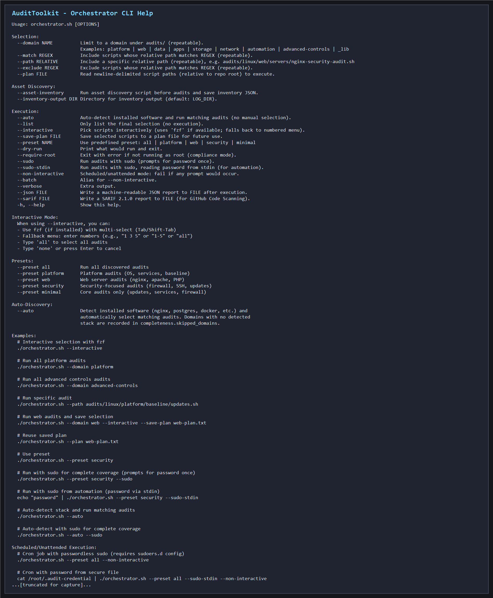
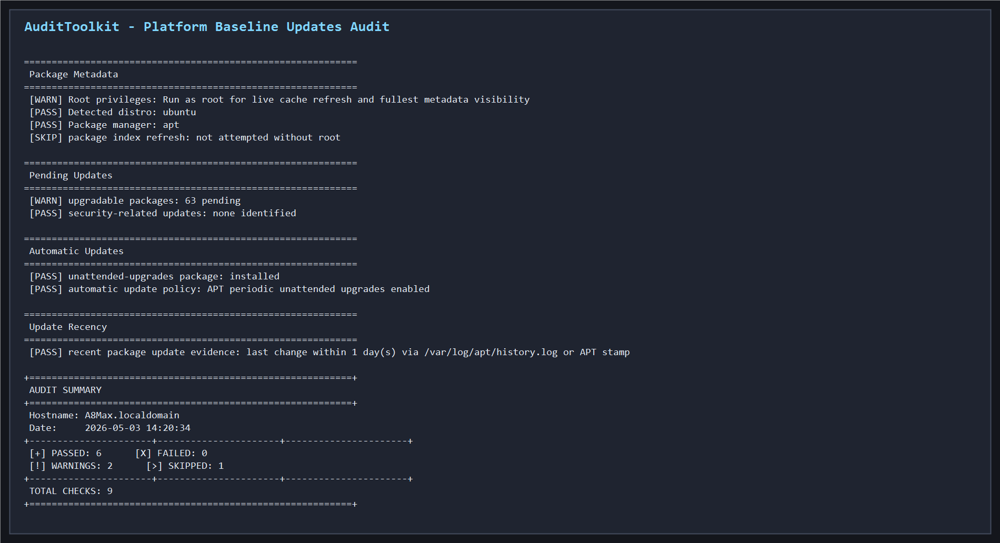
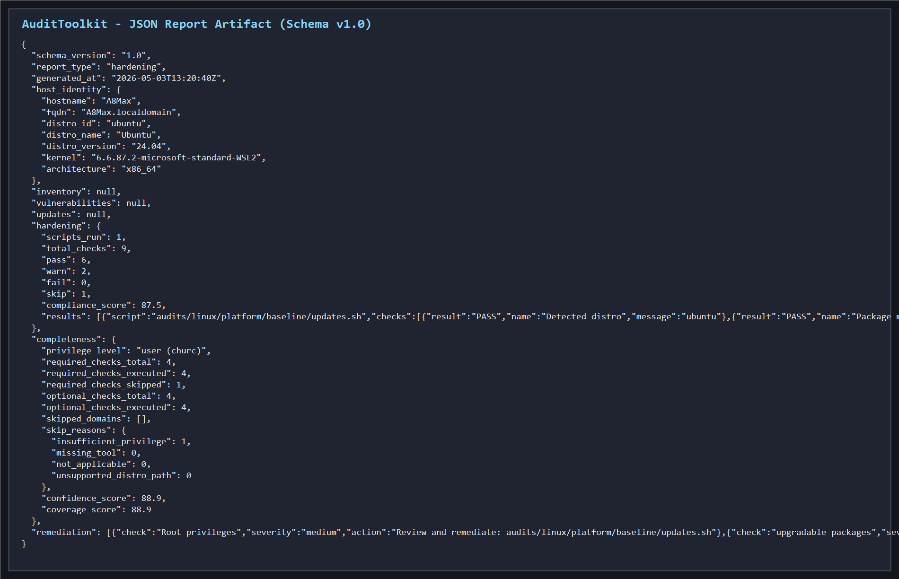
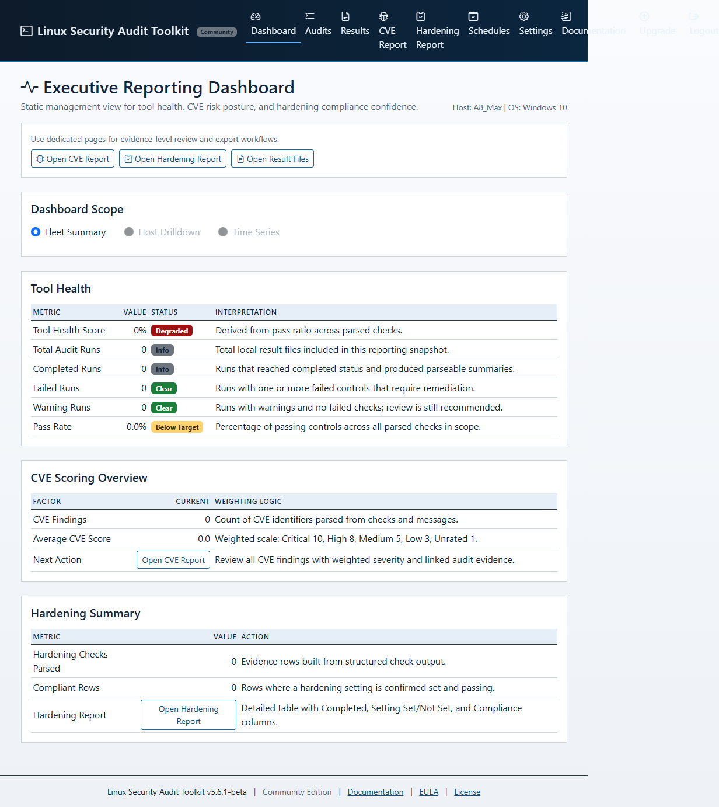
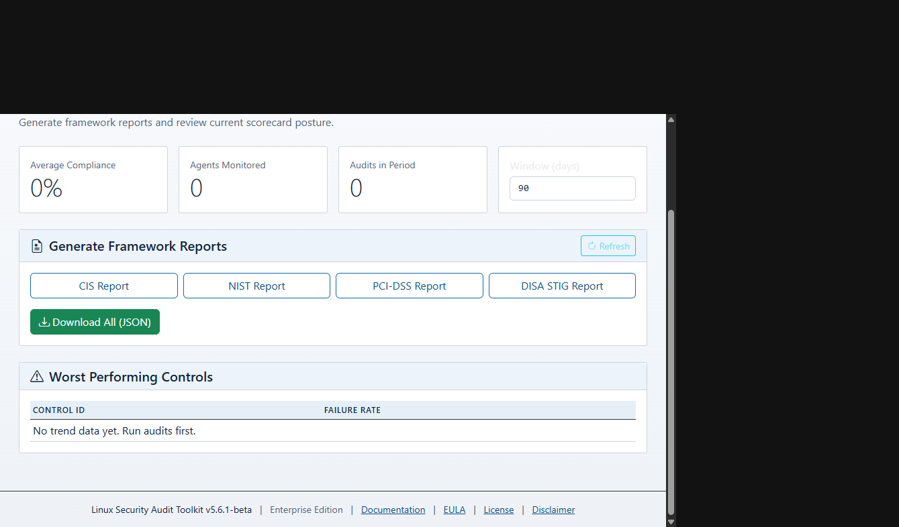
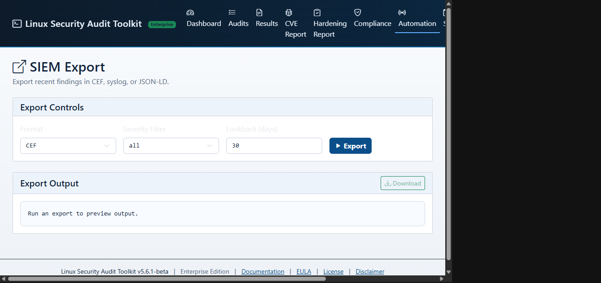

Expanded Linux control coverage for posture validation, hardening verification, and evidence-focused compliance reporting. A beta extension module for the Audit Admin Toolkit that deepens Linux audit breadth across mixed enterprise Linux estates and now includes a documented Enterprise Compliance Platform model.
What This Delivers
The Linux Audit Coverage Expansion addresses a common gap in mixed-estate audit programmes: shallow Linux control verification that produces low-signal findings and weak evidence for compliance review. This module expands both the breadth and quality of Linux audit output.
Broader Linux hardening checks across OS configuration, service hardening, network posture, identity controls, and runtime state — aligned to CIS benchmark and internal policy frameworks.
Improved control mapping and output quality. Findings come with precise evidence, control references, and clear remediation context — designed for triage and remediation planning, not just alerting.
Evidence outputs designed for governance and audit review workflows. Pass/fail status per control with exportable evidence packages for compliance reporting and external review.
Professional and Enterprise workflows add centralised compliance reporting, trend analysis, SIEM export, webhooks, and API-driven integration paths for SOC and platform teams.
Coverage Focus Areas
The module extends the Audit Admin Toolkit’s existing Linux audit capability across six key coverage domains.
Comprehensive checks against Linux baseline hardening standards. Kernel parameters, filesystem mounts, bootloader configuration, and OS-level security controls across RHEL, Debian, Ubuntu, and SLES.
Service inventory and state validation. Network-exposed interfaces, firewall rule verification, open port auditing, and daemon security configuration checks.
Local account auditing, privilege escalation paths, PAM configuration, SSH key and access control validation, and sudoers policy review.
Configurable policy baselines with per-control pass/fail status, evidence capture, and structured exports for operational and compliance teams.
Unified view across multiple Linux distributions in a single audit run. Normalised findings across distribution variants for consistent tracking across a mixed estate.
Findings feed directly into the Audit Admin Toolkit workflow — identification, evidence, owner assignment, remediation tracking, and closure — without any separate tooling.
Distribution Coverage
The expansion module targets the Linux distributions most commonly found in enterprise, financial, and public sector environments.
The Linux Audit Coverage Expansion is in preview as an extension to the Audit Admin Toolkit. Both are available for evaluation. Contact us to request preview access or register interest for GA notification.
For preview access, evaluation support, or to register interest for GA notification:
Contact the TeamSecurity Posture — AuditToolkit Linux Security Lite
AuditToolkit Linux Security Lite has been independently assessed against OWASP security criteria. As a Bash-based read-only tool (not a web application), the OWASP posture covers supply-chain integrity, code quality, script security, and dependency hygiene. The current score is 97/100, Grade A+, assessed and revalidated in May 2026, with one documented improvement item remaining for release artifact signing in CI/CD.
Full security detail including procurement FAQ and the current OWASP scorecard is available in the documentation portal. For procurement and due-diligence enquiries, see the Security FAQ (Doc 22).
| Security Property | Status |
|---|---|
| Read-only execution (no system changes) | PASS |
| No outbound network connections at runtime | PASS |
| Supply-chain integrity (SHA-256 + GPG) | PASS |
| No compiled binaries or obfuscated code | PASS |
| Minimal runtime dependencies (stdlib only) | PASS |
| Structured, schema-validated JSON output | PASS |
| Privilege model documented (root/sudo/unpriv) | PASS |
| No telemetry or phone-home capability | PASS |
| Report artefact handling guidance published | PASS |
| Vulnerability disclosure process defined | PASS |
| Release artifact signing in CI/CD | IMPROVEMENT OPEN |
Visual Evidence
The Linux customer documentation now includes a dedicated screenshot set. The preview below mirrors the curated CLI and HTML captures listed in the screenshot manifest.
Command-line orchestration, dry-run posture, and JSON evidence output from the Linux audit toolchain.



Web dashboard and enterprise pages for compliance reporting, trend visibility, and webhook/SIEM export workflows.



Register interest or request evaluation access to the Audit Admin Toolkit and Linux Expansion preview.